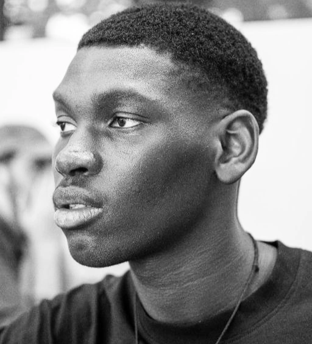
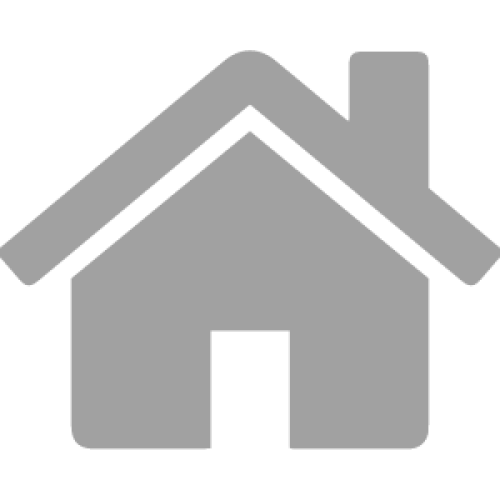
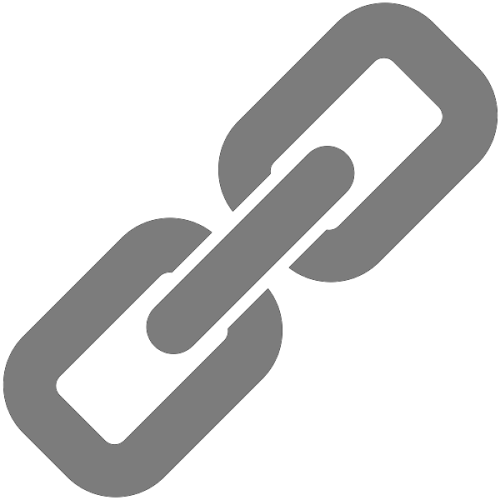

<!DOCTYPE html>
<html lang="fr">

<head>
    <meta charset="UTF-8">
    <meta http-equiv="X-UA-Compatible" content="IE=edge">
    <meta name="viewport" content="width=device-width, initial-scale=1.0">
    <link rel="icon" type="image/png" sizes="16x16" href="img/Logo CV.png">
    <!-- <link rel="stylesheet" href="reset.css"> -->
    <link rel="stylesheet" href="style.css">
    <title>Mon CV</title>
</head>

<body>
    <section id="cv-container">
        <aside class="left">
            
            <section class="contact article-left">
                <div><a href="mailtowademouhamed77@gmail.com">wademouhamed77@gmail.com</a></div>
                <div>
                    <p> 12 grande rue, Rouilly, 77160</p>
                </div>
                <div>
                    <p> Né le 11/08/2001</p>
                </div>
                <div>
                    <p>06 56 71 67 72</p>
                </div>
                <div><a
                        href="https://mouhamed-wade.com/">mouhamed-wade.com</a></div>
            </section>
            <section class="social-network article-left">
                <H3>Réseaux sociaux</H3>
                <div><a href="">@WadeTheDev</a></div>
                <div><a href="">@mouhamed wade</a></div>
                <div><a href="">@wade.desgn</a></div>
            </section>

            <section class="language-tech">
                <H3>languages informatique</H3>
                <p>UI/UX</p>
                <p>HTML CSS</p>
                <p>JAVASCRIPT</p>
                <p>React.Js</p>
                <p>Node.Js</p>
                <p>Mongo DB</p>
            </section>
            <section class="languages">
                <H3>langues</H3>

                <p>Anglais</p>
            </section>
        </aside>


        <aside class="right">
            <section class="title">
                <h1>Mouhamed Wade</h1>
                <h2>Développeur web junior</h2>
                <p>À la recherche d'un contrat d'apprentissage en développement web, à partir du
                    15/09, d'une durée de 1 an, avec un rythme de 3 semaines en entreprise et une
                    semaine à l'école.
                </p>
            </section>
            <section class="diplomes flex-column">
                <h2>Diplômes et formations</h2>
                <article>
                    <h3 class="green">Alternance Développeur Web et Web Mobile</h3>
                    <H4>Konexio, Paris, France Depuis mai 2022</H4>
                    <P>Préparation au titre RNCP Niveau 5 (Bac+2), Html, Css, Javascript, React, Node.js,
                        SQL, NoSQL</P>
                </article>
                <article>
                    <h3 class="green">Certificat de compétences Apple Foundation Program</h3>
                    <H4>Simplon, Montreuil, France De mai 2021 à juin 2021</H4>
                    <P>Formation en Swift, qui a pour projet final une application IOS.</P>
                </article>
                <article>
                    <h3 class="green">Certificat de compétences Artis, développement web</h3>
                    <H4>Simplon, Paris 20e, France De mars 2021 à mai 2021</H4>
                </article>
            </section>
            <section class="exp-pro flex-column">
                <h2>Experiences professionelles</h2>
                <article>
                    <h3 class="green">Projet Slam</h3>
                    <H4>Shein B, Paris De mars 2022 à avril 2022</H4>
                    <P>Projet de site vitrine pour la slameuse "Shein B". Disponible sur mon portfolio.</P>
                </article>
                <article>
                    <h3 class="green">Stage simplon</h3>
                    <H4>Simplon Lab, Paris, France Décembre 2021</H4>
                    <P>J'ai effectué un stage chez Simplon en tant qu'assistant formateur, je devais
                        assister le formateur principal en aidant les apprenants dans leurs projets</P>
                </article>
                <article>
                    <h3 class="green">Piscine développement Web</h3>
                    <H4>Samsung Campus, Paris, France D'octobre 2019 à novembre 2019</H4>
                </article>
            </section>
            <section class="Compétences flex-column">
                <h2>Compétences</h2>
                <article>
                    <h3 class="green" >Persévérance</h3>
                    <P>La motivation c'est ma plus grande qualité. J'ai toujours envie d'en apprendre plus car
                        je souhaite devenir un expert dans mon domaine.</P>
                </article>
                <article>
                    <h3 class="green">Travail d'équipe</h3>
                    <P>De part mon expérience dans la cuisine et l'informatique, j'ai appris à travailler en
                        équipe, à communiquer et à m'organiser pour m'intégrer et travailler dans les
                        meilleures conditions.</P>
                </article>
            </section>
            <section class="footer">
                <article class="atouts">
                    <h2>Centres d'intérêt</h2>
                    <div>
                        <h3 class="green">Bosseur</h3>
                        <P>Persévérant et motivé, j'aime dépasser
                            mes limites</P>
                    </div>
                    <div>
                        <h3 class="green">Joyeux</h3>
                        <P>Très enthousiaste et souriant , cela
                            participe à de bonnes conditions de
                            travail en équipe</P>
                    </div>
                </article>
                <article class="ci ">
                    <h2>Centres d'intérêt</h2>

                    <div>
                        <h3 class="green">Web</h3>
                        <P>Passionné de développement web, je
                            crée régulièrement des sites sur mon
                            temps personnel</P>
                    </div>
                    <div>
                        <h3 class="green">Sports</h3>
                        <P>La course, l'escalade et la musculation</P>
                    </div>
                </article>
            </section>
        </aside>

    </section>
</body>

</html>